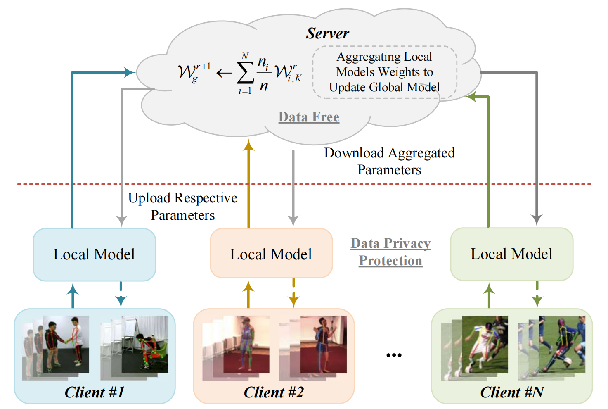
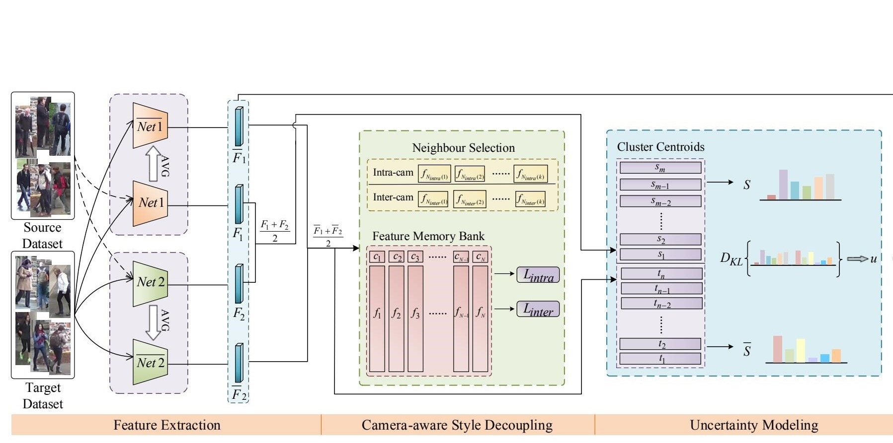
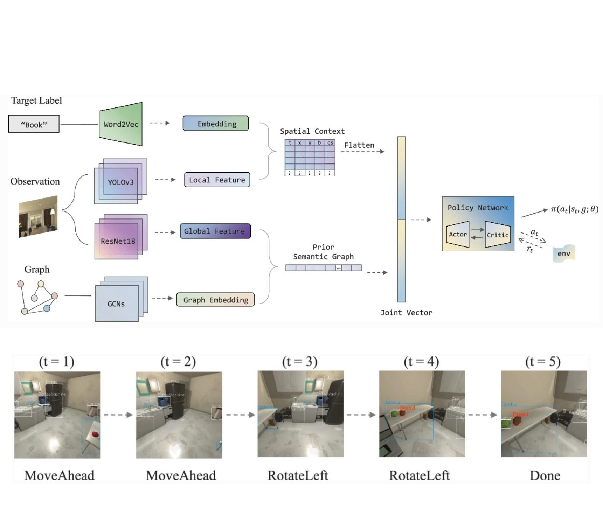
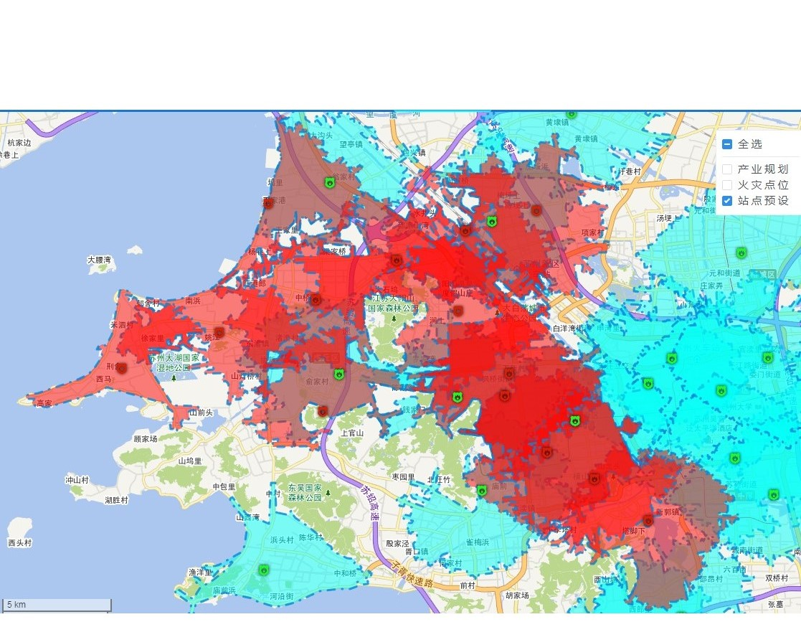
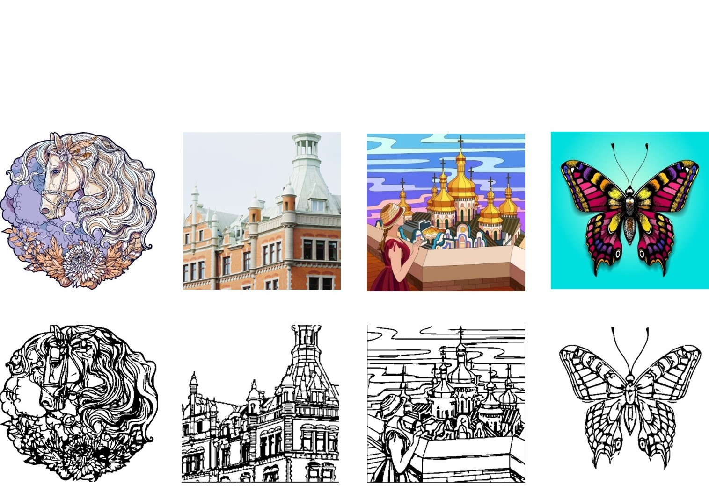

|
Research
I'm interested in computer vision, action recognition, self-supervised learning, and federated learning.
|
|

|
FSAR: Federated Skeleton-based Action Recognition with Adaptive Topology Structure and Knowledge Distillation
Jingwen Guo,
Hong Liu, Shitong Sun, Tianyu Guo, Ming Zhang, Chenyang Si
ICCV, 2023 (in submission)
Paper /
Project Page
We pioneer a novel Federated Skeleton-based Action Recognition (FSAR) paradigm, which enables the construction of a globally generalized model without accessing local sensitive data.
|
|

|
CSUE: Unsupervised Domain Adaptation Person Re-Identification by Camera-Aware Style Decoupling and Uncertainty Modeling
Jingwen Guo,
Hong Liu, Wei Shi, Hao Tang, Jianbing Wu
ICIP, 2022
Paper /
Project Page
We propose a Camera-style Separation and Uncertainty Estimation (CSUE) framework for Unsupervised domain adaptation person re-identification tasks.
|
|

|
SSR: Object Goal Visual Navigation Using Semantic Spatial Relationships
Jingwen Guo,
Zhisheng Lu, Weibo Huang, Ti Wang, Hong Liu
CICAI, 2021
Paper /
Project Page
A navigation method based on Semantic Spatial Relationships (SSR) is proposed and is shown to have more reliable performance when dealing with target-driven visual navigation.
|
|

|
GAFLP: Fire Station Location Planning Model based on Genetic Algorithm
Jingwen Guo,
Pengpeng Zhao, Jiacheng Ni
NDBC, 2020
Paper /
Project Page
We proposed a Fire-Station Location Planning model based on Genetic Algorithm (GAFLP) to effectively solve the problems of high construction cost and large space resource waste of urban fire stations.
|
|
|
Knowledge Graph Retrieval and Visualisation Exploitation
Soochow University Key Research Projects, 2020
Demo
Repetitive work for designers is replaced by AI:
automatically generates the corresponding boundary wireframes for different types of images, reducing the designer's workload in creating line drawings
|
|

|
Image-based Automatic Generation System for Boundary Wireframes
DeeCamp Artificial Intelligence Bootcamp, 2019
Demo
Repetitive work for designers is replaced by AI:
automatically generates the corresponding boundary wireframes for different types of images, reducing the designer's workload in creating line drawings
|
- China National Scholarship.[PDF]
- Peking University Scholarship for Academic Excellence.
- Most Innovative Award for DeeCamp.[PDF]
- Chun-Tsung Scholar issued by Chun-Tsung Endowment.[PDF]
- Second Prize, National Undergraduate Mathematical Modeling Competition (MCM).[PDF]
- Meritorious Winner, American Undergraduate Mathematical Modeling Competition (MCM/ICM).[PDF]
- Recommendation for admission to PKU.
- Three Good Students of Jiangsu Province.
- Software copyright, Fire station location planning system based on genetic algorithm.[PDF]
- Software copyright, Panoramic image generation system based on feature extraction.[PDF]
Design and source code from Jon Barron's website
|
{kind=link}